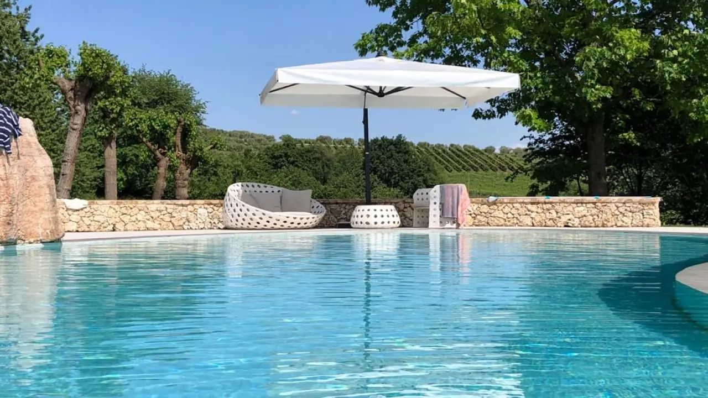
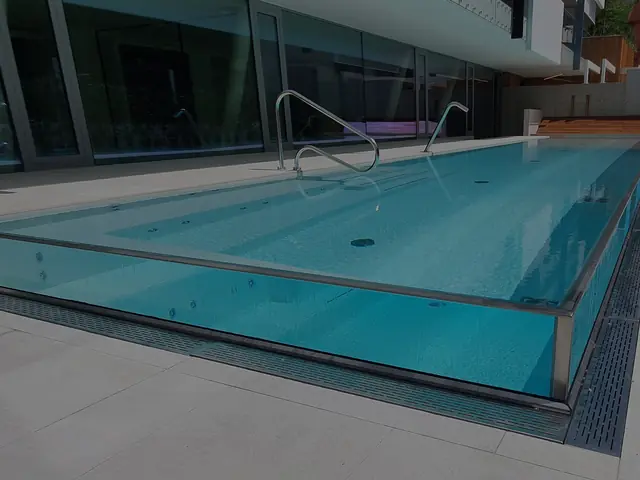
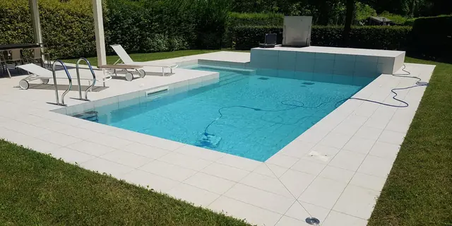
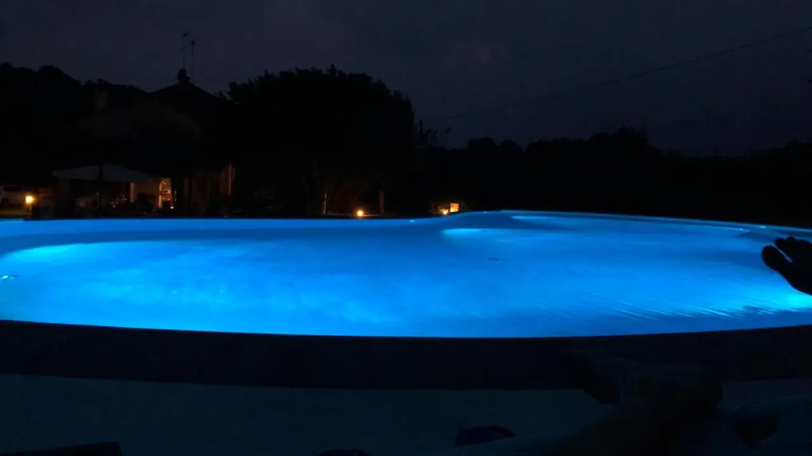
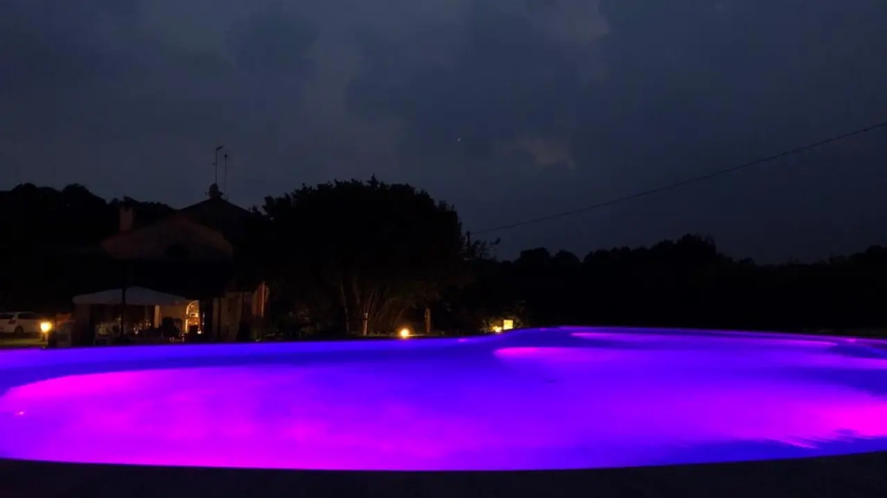
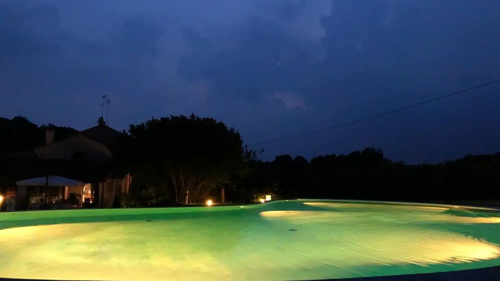
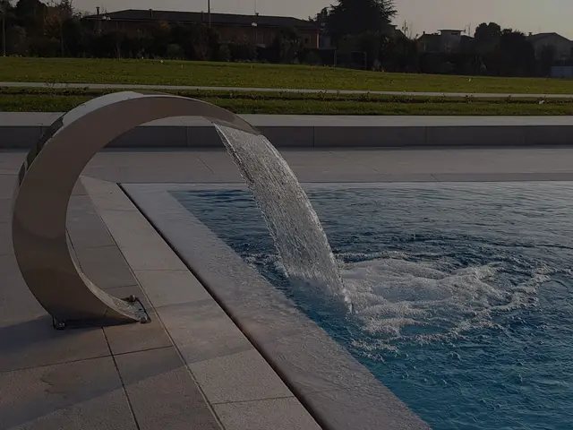
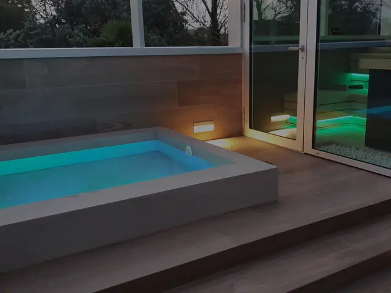
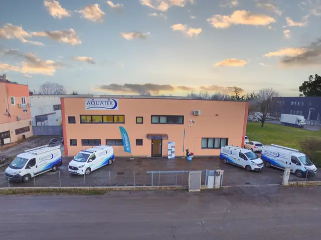

Piscine su misura, dal progetto alla manutenzione.
Progettiamo e costruiamo piscine a sfioro e a skimmer per case, hotel, B&B e centri benessere. Da Casale sul Sile, in provincia di Treviso.
- Esperienza decennaledei nostri tecnici in piscine e trattamento dell'acqua
- Preventivo gratuitosu misura e senza impegno
- Assistenza a 360°anche dopo la consegna, stagione dopo stagione
- Made in Italysede e squadra a Casale sul Sile (TV)
Sfioro o skimmer: dove arriva l'acqua.
La differenza tra i due sistemi sta tutta nel livello dell'acqua e in come viene filtrata. Tocca per vederla.
Piscina a sfioro
L'acqua arriva fino al bordo e tracima in una canalina perimetrale, che la porta in una vasca di compenso. Lo specchio d'acqua non ha bordi interni e sembra più ampio.
La superficie resta sempre pulita: lo strato d'acqua più sporco viene filtrato di continuo. È la scelta per chi vuole finiture eleganti e una piscina che si inserisce con naturalezza nel giardino.
Piscina a skimmer
Il livello dell'acqua resta più basso del bordo. Gli skimmer, aperture lungo la parete, aspirano l'acqua di superficie verso filtrazione e trattamento; le bocchette d'immissione la rimettono in vasca pulita.
È il sistema più semplice e diffuso. Con gli skimmer di ultima generazione, a bocca larga, l'effetto si avvicina molto a quello di un bordo a sfioro.


Piscine che abbiamo costruito.
Ville, casali, giardini, spa e centri benessere. Ogni piscina è pensata per inserirsi con naturalezza nel luogo che la circonda.
Di sera, il colore lo scegli tu.
Stessa piscina, stessa sera: le luci LED subacquee cambiano l'atmosfera con un tocco.



Su misura anche nei dettagli
- Idromassaggio
- Cascata cervicale
- Illuminazione
- Copertura
- e molto altro, da scegliere in fase di progetto


Come nasce la tua piscina.
-
Consulenza e fattibilità
Ci racconti cosa hai in mente. Valutiamo spazio e fattibilità, anche insieme al tuo architetto, ingegnere o impresa edile.
-
Preventivo gratuito
Costruito sulle tue esigenze, con le soluzioni estetiche e tecniche più adatte. Gratuito e senza impegno.
-
Costruzione
Prodotti di qualità, tecnologie e sistemi all'avanguardia, finiture scelte insieme e cura in ogni fase dell'esecuzione.
-
Assistenza dopo la consegna
Restiamo al tuo fianco anche dopo: apertura stagionale, pulizia, controllo dell'acqua e riparazioni quando servono.
Una piscina pronta in ogni stagione.
Hai già una piscina? Ce ne occupiamo noi, dall'apertura alla messa a riposo.
Chiedi la manutenzione-
Primavera
Apertura stagionale
Rimettiamo in funzione impianto e filtrazione e prepariamo l'acqua per il primo bagno.
-
Estate
Pulizia e controllo dell'acqua
Pulizia periodica, monitoraggio dei parametri chimico-fisici e verifica dell'impianto.
-
Autunno
Messa a riposo invernale
Prepariamo vasca e impianto ad affrontare i mesi freddi senza danni.
-
Inverno
Riparazioni e nuovi progetti
Interventi straordinari a piscina ferma e tempo per progettare quella nuova.

Un'azienda giovane, con tecnici di lunga esperienza.
Aquatek nasce da tecnici con un'esperienza decennale nella costruzione di piscine e nel trattamento dell'acqua. Usiamo prodotti di qualità e sistemi all'avanguardia, e restiamo a disposizione per consigli tecnici in ogni fase.
Lavoriamo fianco a fianco con studi tecnici, ingegneri, architetti e imprese edili, dallo studio di fattibilità alla consegna.
Attenzione, precisione, qualità.
Richiedi il preventivo gratuito.
Bastano due minuti. Ti richiamiamo per capire spazio, tempi e idee, e fissare un appuntamento.